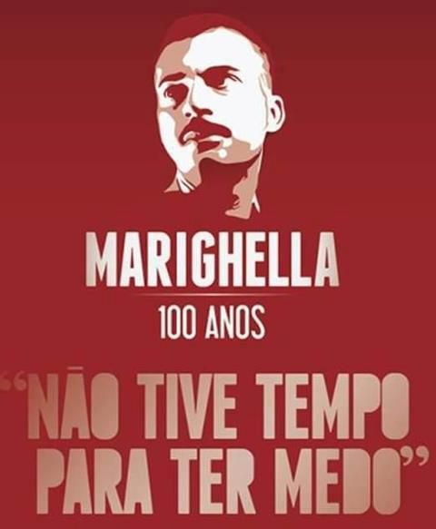

Carlos foi o primogênito dos sete filhos de Augusto Marighella e Maria Tereza Marighella. Augusto era um italiano, entusiasta de ideias anarquistas; no Brasil, ele trabalhou como operário, mecânico, motorista de caminhão de lixo. Já a mãe de Carlos era descendente de negros escravizados de origem Hauçás – um povo do continente africano que se espalha pelo que hoje são diferentes países desde Nigéria até o Sudão. Desde criança, Carlos foi influenciado por seu pai sobre as ideias anarquistas e emancipação dos trabalhadores. Foi também pelo incentivo do pai que ele percorreu a vida escolar, completando no ensino secundário o estudo de Ciências e Letras.
Começou sua trajetória política bem jovem. Sua primeira prisão ocorreu em 1932, após escrever um poema contendo críticas ao interventor Juracy Magalhães. Em 1936, abandonou o curso de Engenharia Civil e se filiou ao Partido Comunista Brasileiro (PCB), na época dirigido por figuras históricas como Astrojildo Pereira e Luís Carlos Prestes. Tornou-se, então, militante profissional do partido e se mudou para o Rio de Janeiro. Conheça também sobre o filme do Marighella